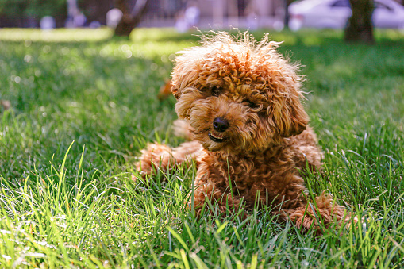

The Poodle, called the Pudel in German and the Caniche in French, is a breed of water dog. The breed is divided into four varieties based on size, the Standard Poodle, Medium Poodle, Miniature Poodle and Toy Poodle, although the Medium Poodle variety is not universally recognised.
The Poodle most likely originated in Germany, although it is also claimed to be from France. The Standard Poodle was originally used by wildfowl hunters to retrieve game from water. The smaller varieties of the breed were bred from the original in France where they were once commonly used as circus performers, but have become popular companion dogs.